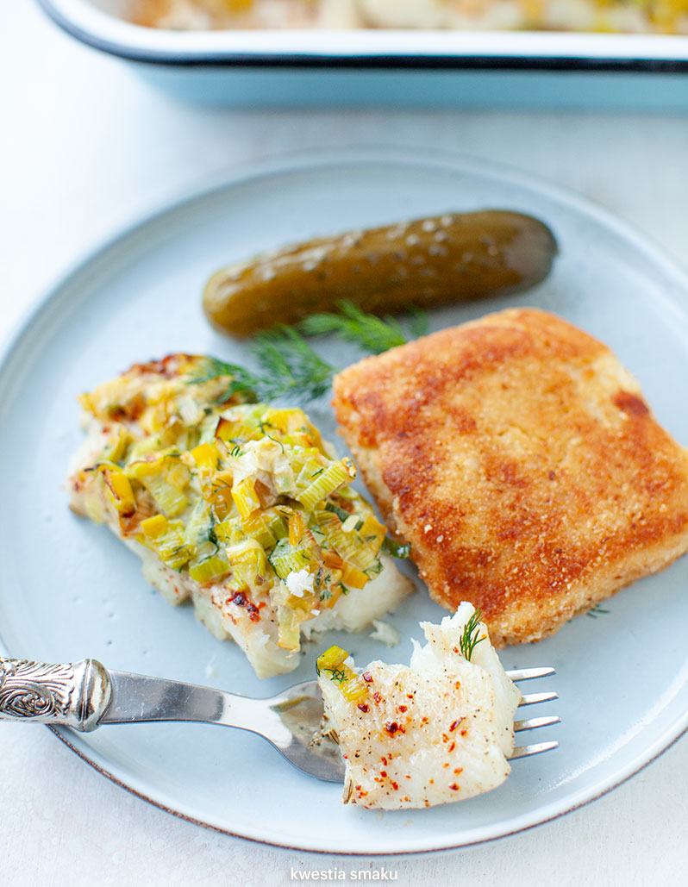

Fish with Leeks

Description
Baked Fish Fillets with Leek Blanket
Ingredients
- 4 fish fillets (such as cod, haddock, or tilapia)
- 2 leeks, white and light green parts only, thinly sliced
- 2 tablespoons butter
- 1 tablespoon olive oil
- Salt and pepper, to taste
- Fresh herbs (such as thyme or parsley), for garnish (optional)
- Lemon wedges, for serving
Steps
- Preheat the oven to 400°F (200°C). Grease a baking dish large enough to hold the fish fillets in a single layer.
- Rinse the fish fillets and pat them dry with paper towels. Season both sides with salt and pepper.
- In a skillet, melt the butter and olive oil over medium heat. Add the sliced leeks and cook until they soften and become translucent, about 5 minutes. Remove from heat.
- Spread a layer of the cooked leeks evenly on the bottom of the greased baking dish.
- Place the seasoned fish fillets on top of the bed of leeks.
- Spread the remaining cooked leeks over the fish fillets, creating a "blanket" of leeks.
- Cover the baking dish with aluminum foil and place it in the preheated oven. Bake for about 15-20 minutes or until the fish is cooked through and flakes easily with a fork.
- Remove the foil and switch the oven to broil. Broil the dish for an additional 2-3 minutes to lightly brown the top of the leek blanket.
- Carefully transfer the baked fish fillets with leeks to serving plates. Garnish with fresh herbs, if desired, and serve with lemon wedges on the side.
- Enjoy your delicious baked fish fillets with leek blanket!